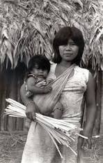

01 / CULTURA

Um modo de ser que se transmite
Nhandereko é uma expressão associada ao modo de vida Guarani. A língua, a espiritualidade e os saberes compartilhados entre gerações fazem parte da continuidade cultural.
A transmissão oral mantém conhecimentos vivos no cotidiano. A comunidade e as relações entre gerações têm papel importante nesse processo.